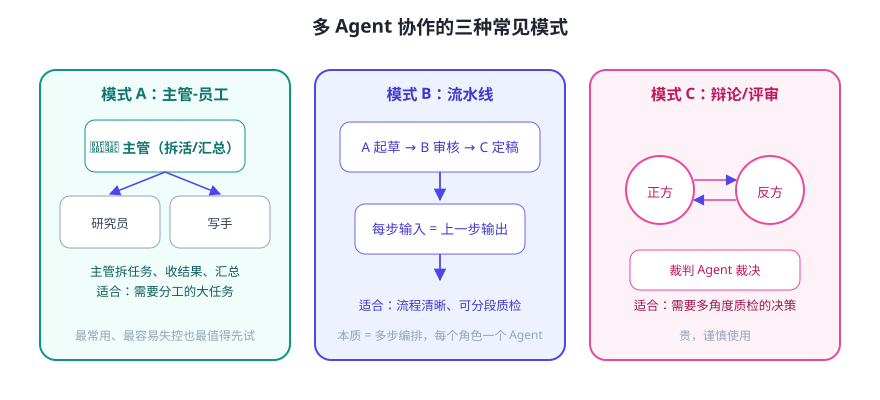

多 Agent 就是把大任务拆给多个“角色”协作：一个负责查资料、一个负责写、一个负责挑毛病。听起来很酷，但它同时放大了成本、延迟和失控风险——先用好单 Agent，再考虑多 Agent。
三种常见协作模式

每种模式的适用与代价
| 模式 | 适用 | 主要代价/坑 |
|---|---|---|
| 主管-员工 | 任务可自然分成多个专业方向 | 上下文传递易丢；主管可能“一言堂” |
| 流水线 | 流程清晰、可分段质检 | 上一步错了会一路放大 |
| 辩论/评审 | 需要多角度把关的决策 | 最贵最慢，易陷入“礼貌附和” |
三个“先别上多 Agent”的信号
- 单 Agent + 好提示词 + 工具就能搞定 → 别加复杂度。
- 你还没办法稳定评测单 Agent 的效果 → 多 Agent 只会更难排查。
- 任务其实只是“多次调用同一流程” → 那是循环/批处理，不是协作。
让协作不跑偏的工程要点
- 角色边界写清楚：每个 Agent 的系统提示词里写明“你只负责 X，不负责 Y”。
- 交接用结构化消息：传 JSON/明确字段，别传散文。
- 设轮次上限：主管和员工最多来回几次？辩论最多几轮？写死。
- 留人类裁判：最终交付前，由人或规则把关，而不是“Agent 们自己觉得行了”。
⚠️ 最容易被低估的成本：多 Agent 的 Token 消耗是“指数级”的——每多一个角色、多一轮来回，都在烧钱烧时间。先估算：同样的任务单 Agent 多少钱、多 Agent 多少钱。
✍️ 今日练习（约 12 分钟）
- 拿你的毕业设计任务，尝试用“主管-员工”拆成 3 个角色，写出各自职责边界。
- 为每个角色写一句“你只负责…不负责…”的系统提示词片段。
- 估算：3 个角色、每角色来回 2 次，大概要多少次模型调用？这让你重新考虑了吗？
📌 今日小结
三模式主管-员工 / 流水线 / 辩论评审
原则能单 Agent 就别多 Agent；多 Agent 是手段不是目的
防跑偏角色边界写死 · 结构化交接 · 轮次上限 · 人类裁判
成本警钟调用次数与 Token 会成倍上涨，先算账
明天预告：让 Agent “下回还记得你”——记忆与状态持久化实战，从对话历史到用户画像。